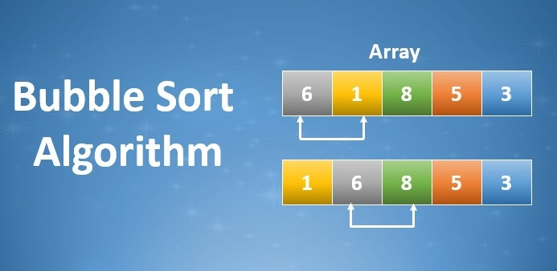
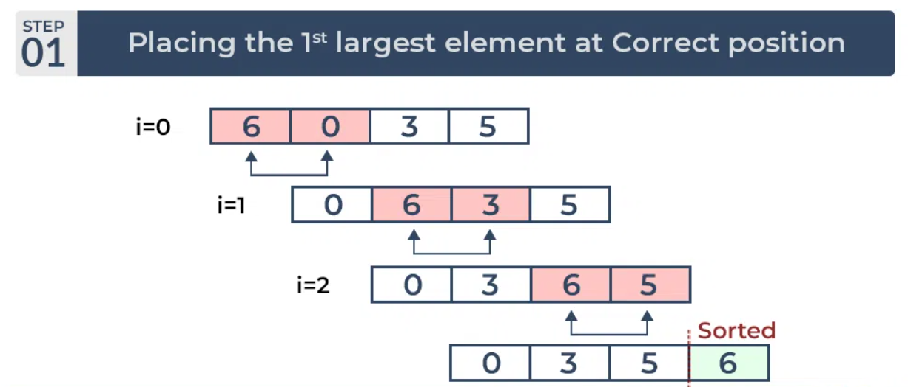
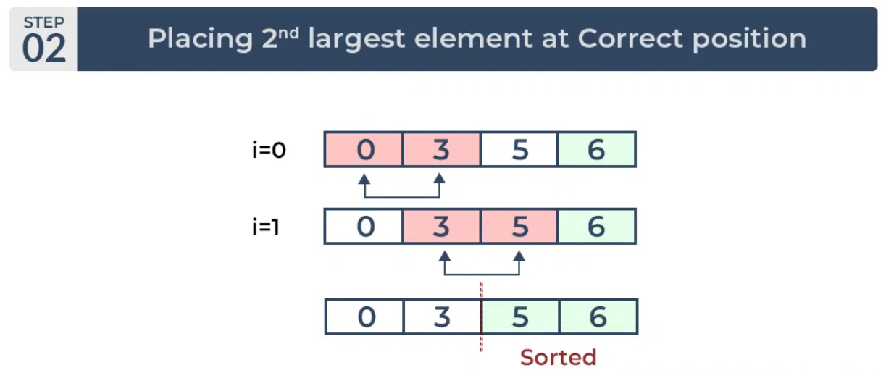
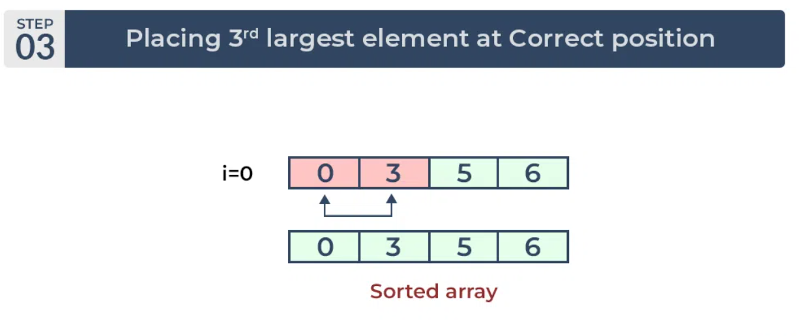
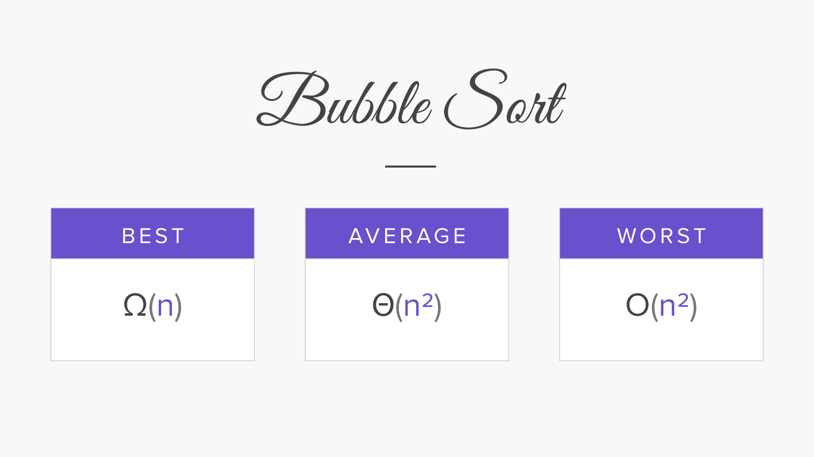

"Quiz Time:Test Your Brainpower!"
Quiz SimulationBubble Sort
What is Bubble Sort ?

Bubble Sort is the simplest sorting algorithm that works by repeatedly swapping the adjacent elements if they are in the wrong order. This algorithm is not suitable for large data sets as its average and worst-case time complexity is quite high.
How does Bubble Sort Work?
Let us understand the working of bubble sort with the help of the example:
For example: Consider an array arr[] = {6, 3, 0, 5}
Pass 1: The largest element is placed in its correct position, i.e., the end of the array.

Pass 2: Place the second largest element at correct position

Pass 3: Place the remaining two elements at their correct positions.

● Total no. of passes: n-1
● Total no. of comparisons: n*(n-1)/2
Time Complexity

Best Case:
In the best-case scenario, when the input array is already sorted, Bubble Sort requires only a single pass through the array to verify that it's sorted.
Therefore, the time complexity in the best case is linear, represented as O(n)
Average and Worst Case:
● In the average and worst-case scenarios, Bubble Sort compares adjacent elements and swaps them if they are in the wrong order.
● In the worst-case scenario, where the array is sorted in reverse order, Bubble Sort would require n-1 passes through the array to sort it completely.
● At each pass, Bubble Sort performs comparisons and potentially swaps elements, resulting in a time complexity of O(n^2), where 'n' is the number of elements in the array.
Advantages of Bubble Sort
●Simplicity: Bubble Sort is easy to understand and implement, making it a good choice for educational purposes and small projects.
● No Extra Space: It doesn't require additional memory beyond the original array, making it memory-efficient.
● Stability: Bubble Sort is a stable sorting algorithm, meaning it preserves the relative order of equal elements.
● Space Efficiency:It doesn't need much additional memory beyond the original dataset, making it space-efficient..
● Adaptive: It can be adaptive in certain cases, meaning it can recognize already sorted portions of the array and terminate early, making it efficient for partially sorted data.
Disadvantages of Bubble Sort
● Inefficiency: Bubble Sort has poor time complexity, particularly for large datasets, making it inefficient compared to other sorting algorithms like Quick Sort or Merge Sort.
● Quadratic Time Complexity: With a time complexity of O(n^2) in the worst-case scenario, Bubble Sort becomes significantly slower as the size of the dataset increases.
●Lack of Adaptability: It doesn't adapt well to already partially sorted datasets, as it still requires multiple passes through the entire array.
●Not Suitable for Large Datasets: Bubble Sort's inefficiency makes it unsuitable for sorting large datasets efficiently.